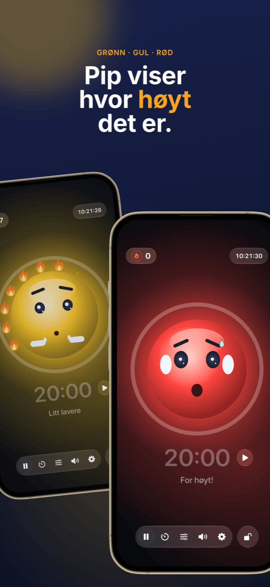

Klasseledelse: klassekart, grupper og støy under kontroll
God klasseledelse legger man knapt merke til, og det er nettopp poenget: timen flyter, overgangene fungerer, og tiden går til læring i stedet for formaninger. Tre spørsmål dukker opp i nesten hver time: Hvem sitter hvor? Hvem jobber med hvem? Og hvor høyt kan det være akkurat nå? Denne veiledningen viser en arbeidsflyt som besvarer alle tre før de blir et problem.
Hva klasseledelse egentlig handler om
Klasseledelse er mer enn disiplin. Allerede på 1970-tallet viste den amerikanske psykologen Jacob Kounin at gode lærere skiller seg mindre ut i hvordan de reagerer på uro, enn i hvor godt de forebygger den. Blant kjennetegnene hans er:
- Overblikk: klassen merker at du har hele rommet i blikket.
- Smidighet og tempo: overganger mellom faser koster ikke minutter, og timen mister ikke farten.
- Aktivisering av gruppen: alle forblir involvert, ikke bare den som har ordet.
Mye av dette er holdning og erfaring. Men en del er rett og slett organisering, og den kan forberedes. Det er der den følgende arbeidsflyten kommer inn.
Trinn 1 · Én gang på forhåndLag klasselisten én gang, bruk den overalt
Den største tidstyven er dobbeltarbeid. Eksporter klasselisten én gang som CSV fra Excel, Numbers eller Google Regneark. Både Platzwahl og Team Trekning importerer filen direkte, og hele klassen er lagt inn på sekunder. Begge appene lagrer navnene bare lokalt på enheten, uten konto og uten sky. Med elevdata er det ingen detalj, men en forutsetning.
Trinn 2 · FundamentetKlassekartet: forebygg uro før den oppstår
Klassekartet er det mest virkningsfulle verktøyet i klasseledelse, fordi det virker hvert minutt uten at du trenger å si noe. Hvem som sitter ved siden av hvem, avgjør prat, distraksjon og konsentrasjon. Dette har vist seg å virke:
- Skill urolige elever, ikke bare side om side, men også foran og bak hverandre.
- Bruk nærhet: elever som trenger støtte eller lett faller ut, sitter i ditt direkte synsfelt.
- Fordel rolige ankre mellom de mer livlige elevene.
- Bytt jevnlig, for eksempel etter feriene eller hver måned, så det ikke dannes faste urohjørner.
I Platzwahl setter du disse reglene for hver elev (urorisiko, plass foran, ønskede naboer, atskillelser) og lar klassekartet beregnes automatisk. En poengsum viser hvor godt alle reglene er oppfylt. Det ferdige kartet havner på kateteret som PDF.
 Trinn 3 · Samarbeidsfaser
Trinn 3 · Samarbeidsfaser
Rettferdige grupper uten diskusjon
«Får vi velge selv?» er spørsmålet som gjør at mange gruppearbeid er tapt før de begynner. Fritt valg tar tid, sementerer klikker og etterlater alltid de samme. Målrettet inndeling er rettferdig, men tungvint, og knapt verdt bryet for ti minutters pararbeid.
For de mange korte fasene er tilfeldighet den beste løsningen: Det går raskt, ingen føler seg forfordelt, og klassen lærer å samarbeide med alle. Det viktige er at trekningen er synlig. Når klassen ser navnene bli stokket på projektoren, er det ingenting å diskutere.
I Team Trekning velger du antall lag, velger bort fraværende med ett trykk og trekker. Lagene kan vises stort på veggen eller eksporteres som PDF. For lengre prosjekter der visse kombinasjoner må unngås, er målrettet inndeling fortsatt det beste valget.
 Trinn 4 · Arbeidsfase
Trinn 4 · Arbeidsfase
Gjør støyen synlig i stedet for å hysje hele tiden
Gruppearbeid er bråkete, og det er helt greit. Det blir et problem når ingen lenger vet hvor høyt som er for høyt, og du bruker timen på å si «Hysj!». Formaninger slites fort ut og avbryter nettopp dem som jobber konsentrert.
Tre ting fungerer bedre:
- Avtal lydnivået: bestem sammen med klassen hva som gjelder i hvilken fase. Hvisking ved individuelt arbeid, makkerstemme ved gruppearbeid.
- Vis lydnivået: et støylys på projektoren gir klassen den tilbakemeldingen du ellers måtte gi høyt.
- Belønn ro i stedet for å straffe bråk: hvis lyset bare blir rødt og tar noe fra klassen, blir det fort et pressmiddel, og enkelte høylytte elever blir klassens syndebukk. Et felles mål som klassen kan nå, fungerer bedre.
Det er akkurat dette Ruhe er laget for: En maskot viser grønt, gult eller rødt, og så lenge det er rolig, tennes den ene flammen etter den andre. Tolv flammer blir en full krans, og det feires. Grensene for gult og rødt stiller du inn etter fasen, eller du lar Ruhe kalibrere seg selv. En tidtaker viser gjenstående tid, projektorvisningen viser alt stort på veggen, og betjeningen blir på din iPad. Ruhe måler bare lydnivået; ingenting tas opp.

Trinn 5 · AvslutningGjør suksess synlig
På slutten av timen teller det som fungerte. En full flammekrans er en god anledning til en kort ros til hele klassen. Og hvis det ikke gikk i dag, er det en mulighet til å finne ut sammen hvorfor, uten å lete etter syndere. Gjentatte problemer ved bestemte pulter er et tegn på at det er tid for et nytt klassekart.
Slik ser en time med denne arbeidsflyten ut
| Fase | Hva skjer | Verktøy |
|---|---|---|
| Før timen | Klassekartet ligger fremme, alle vet hvor de skal sitte. Ingen kamp om plassene. | Platzwahl |
| Oppstart | Fellesfase i den faste plasseringen. | – |
| Overgang | Lagene trekkes på projektoren, fraværende er valgt bort. | Team Trekning |
| Arbeidsfase | Støylys og tidtaker går på projektoren, klassen samler flammer. | Ruhe |
| Oppsummering | Tilbake til de faste plassene, et raskt blikk på flammekransen. | Ruhe |
Vanlige spørsmål
Hva betyr klasseledelse?
Klasseledelse omfatter alt en lærer gjør for at mest mulig av undervisningstiden faktisk skal være læringstid: regler og rutiner, innredning og klassekart, smidige overganger og overblikk over hele klassen. Det handler mindre om å reagere på uro enn om å hindre at den oppstår.
Hva hjelper når klassen stadig er for bråkete?
Avtal først med klassen hvilket lydnivå som er greit i hvilken fase. Gjør deretter lydnivået synlig i stedet for å formane hele tiden, for eksempel med et støylys på projektoren. Mest virkningsfullt er å anerkjenne rolige faser i stedet for bare å straffe bråk.
Er et støylys i undervisningen lurt?
Ja, når det brukes som et felles mål og ikke som et straffeverktøy. Grensene bør passe fasen: Gruppearbeid kan være mer bråkete enn individuelt arbeid. Et støylys som belønner ro i stedet for å straffe bråk, hindrer at enkelte høylytte elever blir klassens syndebukk.
Bør grupper deles inn tilfeldig eller målrettet?
Begge deler har sin plass. For korte, hyppige faser i par eller grupper er tilfeldighet ideelt: raskt, rettferdig og uten diskusjon om hvem som jobber med hvem. For lengre prosjekter eller vanskelige konstellasjoner lønner målrettet inndeling seg. Selve klassekartet bør derimot alltid planlegges bevisst.